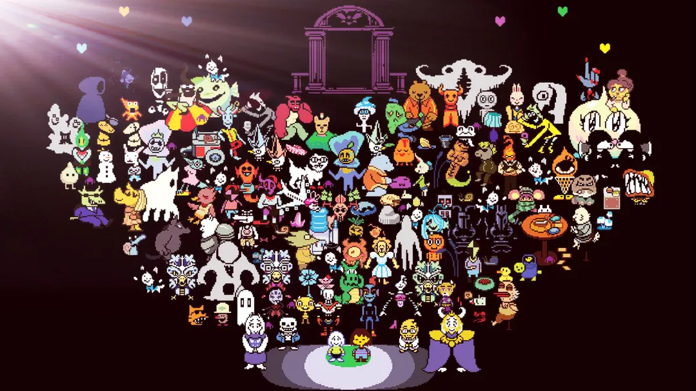

|  |
传说之下（UNDERTALE） 《UNDERTALE》是Toby Fox独立开发和发行的角色扮演游戏 。 玩家在游戏中将控制一名掉入地下怪物世界的人类，玩家可以寻找离开的路，亦或是选择留下。 背景设定 很久很久以前，地球由两个种族均等统治着，分别是人类和怪物。 一天，人类担心怪物们会利用人类灵魂的力量来摧毁人类，便先手发动战争，击碎了双方之间的和平。在近似屠杀式的侵略下，人类大获全胜。人类将怪物驱逐到地下，并设下了相当强力的魔法结界，将怪物困在伊波特山下的地底。而传说中登上伊波特山的人类没有一个活着回来过。 201X年，一个人类小孩登上伊波特山，发现了一个大洞，并一不小心被藤蔓绊倒跌进了洞中…… 游戏方式 Undertale中的战斗系统采用回合制RPG。在敌人的回合中，他们用弹幕进行攻击。玩家必须移动主角的灵魂，以避免攻击。随着游戏的进行，新的元素以攻击类型和灵魂模式的形式引入。攻击可以有不同的颜色，其中一些可以治愈灵魂或成为障碍。灵魂模式会改变灵魂的颜色及其在战斗中的表现， 在主角的回合中，他们可以使用每个回合的四个选项之一："战斗"、"行动"、"物品"和"仁慈"。战斗对对手造成伤害。选择行动可以改变对手的情绪，或揭示敌人的信息。使用物品可以使主角受益。如果满足某些条件，可以选择饶恕来饶恕敌人，从而结束战斗。或者选择"逃跑"离开战斗，在战斗结束时，会获得金钱。杀死敌人会获得经验值，但如果放过敌人，则不会提供任何经验值或提升LV。Undertale强调杀死和饶恕遇到的怪物的道德，因为玩家的行为决定了结局。与传统的角色扮演游戏不同，可以在不杀死怪物的情况下完成Undertale。 主世界主要由玩家必须解决的谜题组成才能取得进展。战斗也可以看作是谜题，因为它可能需要一套正确的"行动"来和平解决战斗。然而，如果玩家决定杀死他们能找到的每一个怪物，在接下来的路途中，玩家将度过一个相当糟糕的旅途，在这种情况下，玩家将会因为接下来的头目而头疼不已。 与传统的RPG游戏不同，Undertale有丰富的磨练、回溯以及少数支线任务，Undertale以诙谐幽默的对话为特色，偶尔会打破第四面墙。对话和位置可以根据玩家的行动进行彻底改变。这包括次要选项、杀死和饶恕怪物以及保存功能。对于后者，几乎每个主要角色都保留了上个存档的记忆。如果玩家退出或重置游戏，这些角色会对玩家过去的操作发表评论，或者对过去的游戏产生熟悉感。 游戏评价 《UNDERTALE》看似古拙，但在它那简单的外衣之下却包裹着许许多多的出人意料的惊喜，其间填充着水平尚可的笑料和时隐时现的感动。将这些东西捏成一团，也就成了玩家们眼前的这部黑色童话。尽管它并不总是能巧妙得让人拍案称奇，但它却是在一片古老而贫瘠的土地上开出的鲜艳创意之花。（游民星空 评） 在玩家刚开始游玩时，玩家会被路上充斥的愚蠢的双关语和弱智的解密内容惹恼，但在结尾却会被一种出乎玩家意料的方式所震撼。《UNDERTALE》打破了传统RPG的条约束缚，颠覆了玩家对于RPG游戏的理解，它有着强大的剧本、独特的游戏方式、无处不在的惊喜、发人深思的结局、动态的叙事方式、对于RPG玩家的深度理解，玩家无法从其它任何一款游戏中找到相同的体验。快餐化游戏越来越多，但《UNDERTALE》将会让玩家难以忘怀。游戏的画面或许并不怎样，但它无疑是一件艺术品。（IGN 评） |
| back |